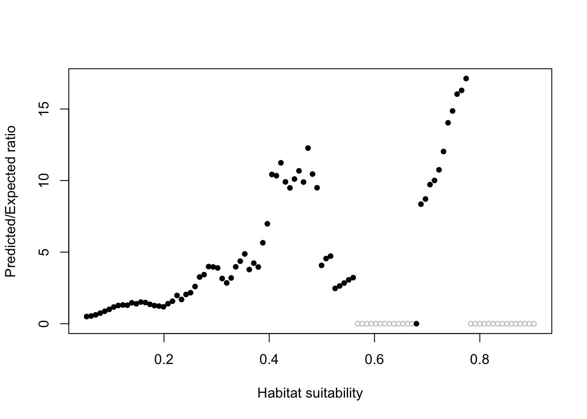
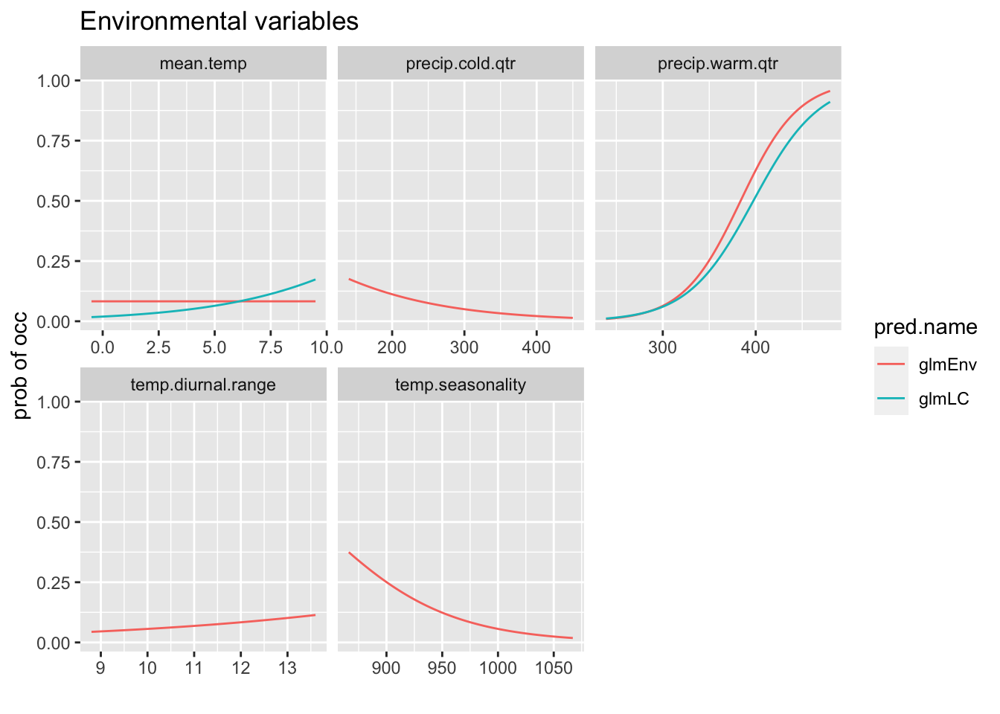

Chapter 8 SDMs – GLM
In a linear regression, we look to explain the value of a response variable with a linear combination of our explanatory variables. For example,
\[y = \alpha + \beta_1 x_1 + \beta_2 x_2 + \epsilon\]
In the case of the presence/background SDM, our observations are 0 or 1. We do logistic regression and our \(y\) is the probability of an observation (probability of ‘success’ aka a 1). We are trying to find a set of variables and \(\beta\)s where cells with 1s are predicted to have high probability of observation and cells with no observations have low probability. Keep in mind that we are using background, not actually absences (0s).
It’s important when doing this kind of analysis to not have too much correlation between your explanatory variables. We already dealt with selecting a set of uncorrelated variables in the chapter on variable correlation, but we’ll see a couple more approaches in this chapter too.
8.1 Set-up
This chapter will use the following libraries.
8.1.1 Load the data
Load the shapefiles, Trillium data and variables raster stack created earlier.
# The VT, NH and HB outlines
load("data/shapefiles.RData")
# The original observation data lat/lon
load("data/trillium_presences.RData")
# All the data needed to fit the SDM The grid cells with
# presences and background grid cells w predictors The
# variables that I'll use for various models
load("data/sdm_data.RData")
# Raster of all predictors
allVars <- raster::brick("data/allVars.grd")8.1.2 First dataset
For this first fit, I will use the first dataset in my training/test list.
8.2 Fit GLM
Fit a generalized linear model with all the environmental variables.
pa ~ .is a model formula. To the left of~is the response, in this case presence/absence.- To the right of
~are the predictor variables..is saying use all variables in the data. To use that shortcut, I need to pass in a data frame with onlypa(my response variable) and the predictor variables that I want to use. Thus for the environmental variables model, I pass intraindat[,c("pa", envvars)]which is a data frame withpaandenvvarsselected. binomial(link = "logit")is what we specify for logistic regression (modeling 0/1 data).
fit <- stats::glm(formula = pa ~ ., family = binomial(link = "logit"),
data = traindat[, c("pa", envvars)])Save to my model list.
8.3 Predictions
To plot predictions, use the predict() function. We need to pass in the raster stack of the predictor variables and the model. I want to use type=response in order to get the probabilities (which is what a binomial fit returns).
Now we can plot the prediction.
Because I will be making similar plots, I will make a function for my plots so they all look the same.
pm.plot <- function(x, main = "", scale.min = 0, scale.max = 1,
..., mar = c(5, 4, 4, 5)) {
par(mar = mar)
plot(x, main = main, breaks = seq(scale.min, scale.max, (scale.max -
scale.min)/10), col = rev(terrain.colors(11)), xlab = "Longitude",
ylab = "Latitude", cex = 0.75, ...)
plot(nhvtshp, add = TRUE, border = "blue")
plot(hbshp, add = TRUE)
}Now make the prediction plot with this function.

Let’s zoom in on Hubbard Brook.
8.4 Model Evaluation
8.4.1 AUC Curves
This is a plot of how well the model predicts presence and background in the test data (so not the data you used to fit the model). A value of 0.5 is random. Values closer to 1 mean the model predicts better than random. 0.7 would be a mediocre model. This metric is sensitive to what you choose as background and how much background points you have.
The dismo::evaluate() function will calculate this metric for us. It needs the presence and background test data and the model fit.
8.4.2 Boyce Index
The Boyce Index looks just at the presence data. We want this curve to go steadily up from left to right. The ecospat::ecospat.boyce() computes this metric.
predict(allVars, fit, type = "response")
ecospat::ecospat.boyce(pm, cbind(pres_test$lon, pres_test$lat)) Our model with environmental variables is ok (it goes up as x increases).
8.4.3 Response curves
This shows the relationship between the preditor variable and the probability of presence.
rp <- biomod2::response.plot2(models = c("fit"), Data = traindat,
show.variables = envvars, fixed.var.metric = "mean", use.formal.names = TRUE)Warning in which.max(sum_level): NAs introduced by coercionSince rp is a data frame in long form, we can also use ggplot to plot.
8.4.4 Variable importance
Let’s look at the variable importance. This is a measure of how much each variable singly impacts the fit.
temp.diurnal.range temp.seasonality precip.warm.qtr precip.cold.qtr
0.030525 0.353842 1.000000 0.079967 8.5 More GLM fits
Now I repeat the model fitting code for the other sets of variables and store to my model list. Careful, this is not memory efficient and modellist will be large. I am doing this for convenience since my region is not too big. If I had a big region, the model objects would be large and I would need to be careful with memory.
8.5.1 Topography only
This is the model with just topography.
[1] "elevation" "slope" "aspect" The only change is that the data are now traindat[,c("pa", vars)] with vars=topovars.
8.5.2 Tree Cover only
This is the model with tree cover and a few environmental variables.
[1] "Tree.Cover" "mean.temp" "precip.warm.qtr"8.5.3 VIF variables
These were variables selected by the Variance Inflation step search function.
[1] "temp.diurnal.range" "temp.seasonality"
[3] "mean.temp.warm.qtr" "precip.seasonality"
[5] "precip.warm.qtr" "precip.cold.qtr"
[7] "slope" "aspect"
[9] "Evergreen.Broadleaf.Trees" "Mixed.Other.Trees"
[11] "Shrubs" "Herbaceous"
[13] "Cultivated" "Flooded"
[15] "Urban" "Water" fit <- stats::glm(formula = pa ~ ., family = binomial(link = "logit"),
data = traindat[, c("pa", vars)])Warning: glm.fit: fitted probabilities numerically 0 or 1 occurred8.5.4 Small set of environmental variables
[1] "precip.warm.qtr" "mean.temp" "temp.diurnal.range"8.6 Variable selection
The model with the VIF variables still has a lot of variables.
[1] "temp.diurnal.range" "temp.seasonality"
[3] "mean.temp.warm.qtr" "precip.seasonality"
[5] "precip.warm.qtr" "precip.cold.qtr"
[7] "slope" "aspect"
[9] "Evergreen.Broadleaf.Trees" "Mixed.Other.Trees"
[11] "Shrubs" "Herbaceous"
[13] "Cultivated" "Flooded"
[15] "Urban" "Water" Let’s try stepwise variable selection using AIC as criteria.
glmStart <- glm(pa ~ ., family = binomial(link = "logit"), data = traindat[,
c("pa", vifvars)])
glmStep <- MASS::stepAIC(object = glmStart, scope = pa ~ ., data = traindat[,
c("pa", vifvars)], direction = "both", trace = -1, k = 2,
control = glm.control(maxit = 500))
# Save
modellist[["glmStep"]] <- list(model = glmStep, name = "glmStep",
desc = "GLM - variables selected w step AIC", terms = attr(glmStep$terms,
"term.labels"))This model has fewer terms:
[1] "temp.seasonality" "mean.temp.warm.qtr" "precip.seasonality"
[4] "precip.warm.qtr" "precip.cold.qtr" "slope"
[7] "Mixed.Other.Trees" "Shrubs" "Herbaceous"
[10] "Cultivated" 8.7 Model Comparison
8.7.1 AIC
AIC is a measure of model fit penalized by how many parameters are being fit. It is a model fit metric that helps you not overfit a model (use too many parameters). Smaller AIC is better. The actual value is unimportant rather you compare AICs within a set. Things to keep in mind.
- The data must be identical in the models being compared.
- Best not to compare AICs from different functions unless you are sure they are showing the same values. Some functions drop a constant, since only differences between models matter. But if you are comparing AICs from models fit with different functions, it critical that the constant is not dropped. This is less of a problem now as function writers are more careful, but just be aware.
Here are the AICs so far. lapply means apply a function to all objects in a list. AIC() is the function that returns the AIC for a model.
glmStep glmVIF glmLC glmEnv glmMinEnv glmTopo
2668.134 2677.802 2729.548 2763.459 2791.425 2798.976 8.7.2 AUC curves
First I’ll make a data frame.
dfb <- data.frame(x = NULL, y = NULL, model = NULL)
for (i in names(modellist)) {
erf <- dismo::evaluate(pres_test, backg_test, model = modellist[[i]]$model)
a <- data.frame(x = erf@FPR, y = erf@TPR, model = i, title = paste0(i,
" AUC=", round(erf@auc, digits = 2)))
dfb <- rbind(dfb, a)
}Now I can use that data frame with ggplot.
8.7.3 Boyce Index
Let’s check model quality using the Boyce Index. First I will add the index to all my model lists. Since I am doing model predictions, I’ll save that to a raster stack for plotting later. This takes a long time, so I skip if I’ve already added the index to the list.
for (i in names(modellist)) {
pm <- predict(allVars, modellist[[i]]$model, type = "response")
if (i == names(modellist)[1])
pm.stack <- pm else pm.stack <- raster::stack(pm.stack, pm)
if ("bindex" %in% names(modellist[[i]]))
next
bindex <- ecospat::ecospat.boyce(pm, cbind(pres_test$lon,
pres_test$lat), PEplot = FALSE)
modellist[[i]]$bindex <- bindex
}
names(pm.stack) <- names(modellist)Then I’ll make a data frame.
dfb <- data.frame(x = NULL, y = NULL, model = NULL)
for (i in names(modellist)) {
bi <- modellist[[i]]$bindex
a <- data.frame(y = bi$F.ratio, x = bi$HS, model = i)
dfb <- rbind(dfb, a)
}
dfb$observed <- "yes"
dfb$observed[dfb$y == 0] <- "no"Now I can use that data frame with ggplot.
p <- ggplot(dfb, aes(x = x, y = y)) + geom_point(aes(col = observed)) +
ylab("Boyce Index") + xlab("Suitability")
p + facet_wrap(~model) + ggtitle("Evaluation of the test data performance")
8.7.4 Response curves
We can compare the response curves for models which have the same variables.
glmEnv <- modellist[["glmEnv"]]$model
glmLC <- modellist[["glmLC"]]$model
rp <- biomod2::response.plot2(models = c("glmEnv", "glmLC"),
Data = traindat, show.variables = envvars, fixed.var.metric = "mean",
plot = FALSE, use.formal.names = TRUE)Warning in which.max(sum_level): NAs introduced by coercionThe models don’have all the variables. I will put NAs if the model doesn’t have that variable.
rp$include <- apply(rp, 1, function(x) {
x[2] %in% modellist[[x[4]]]$terms
})
rp$pred.val[!rp$include] <- NAgg.rp <- ggplot(rp, aes(x = expl.val, y = pred.val, col = pred.name)) +
geom_line(na.rm = TRUE) + ylab("prob of occ") + xlab("") +
facet_wrap(~expl.name, scales = "free_x") + ggtitle("Environmental variables")
print(gg.rp)
8.8 Model comparison table (first data set)
Compare AICs, Spearman Correlation for the models with the first data set (in traindatlist).
df <- data.frame(name = unlist(lapply(modellist, function(x) {
x$name
})), Spearman = unlist(lapply(modellist, function(x) {
x$bindex$Spearman.cor
})), AUC = unlist(lapply(modellist, function(x) {
dismo::evaluate(pres_test, backg_test, model = x$model)@auc
})), AIC = unlist(lapply(modellist, function(x) {
AIC(x$model)
})))
df$delAIC <- df$AIC - min(df$AIC)
df <- df[order(df$AIC), ]
knitr::kable(df, row.names = FALSE)| name | Spearman | AUC | AIC | delAIC |
|---|---|---|---|---|
| glmStep | 0.956 | 0.7396198 | 2668.134 | 0.000000 |
| glmVIF | 0.957 | 0.7400992 | 2677.802 | 9.668267 |
| glmLC | 0.901 | 0.7164793 | 2729.548 | 61.414438 |
| glmEnv | 0.823 | 0.7246033 | 2763.459 | 95.325415 |
| glmMinEnv | 0.881 | 0.6973802 | 2791.425 | 123.290818 |
| glmTopo | 0.863 | 0.7244628 | 2798.976 | 130.842026 |